Catálogo Dolce Pasta Paraguay — izquierda: anterior · derecha: nuevo (Barquillo solo N° 45)
Anterior · página 1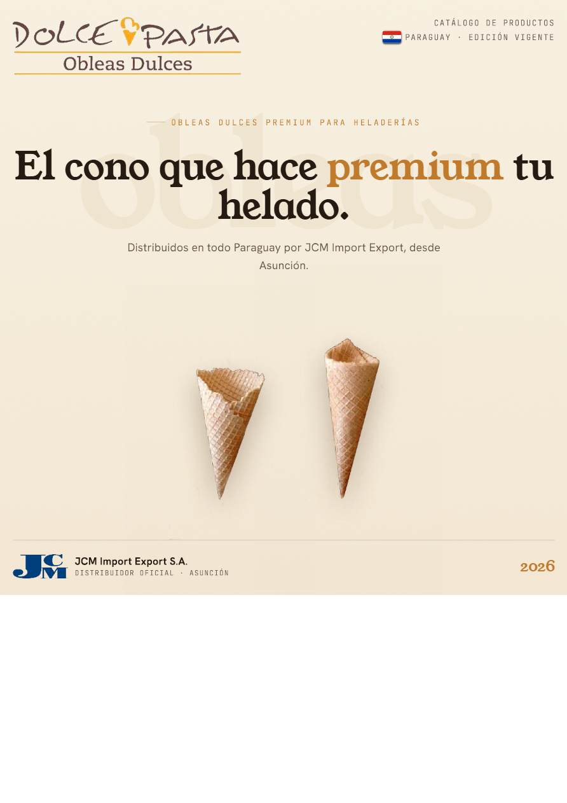
Nuevo · página 1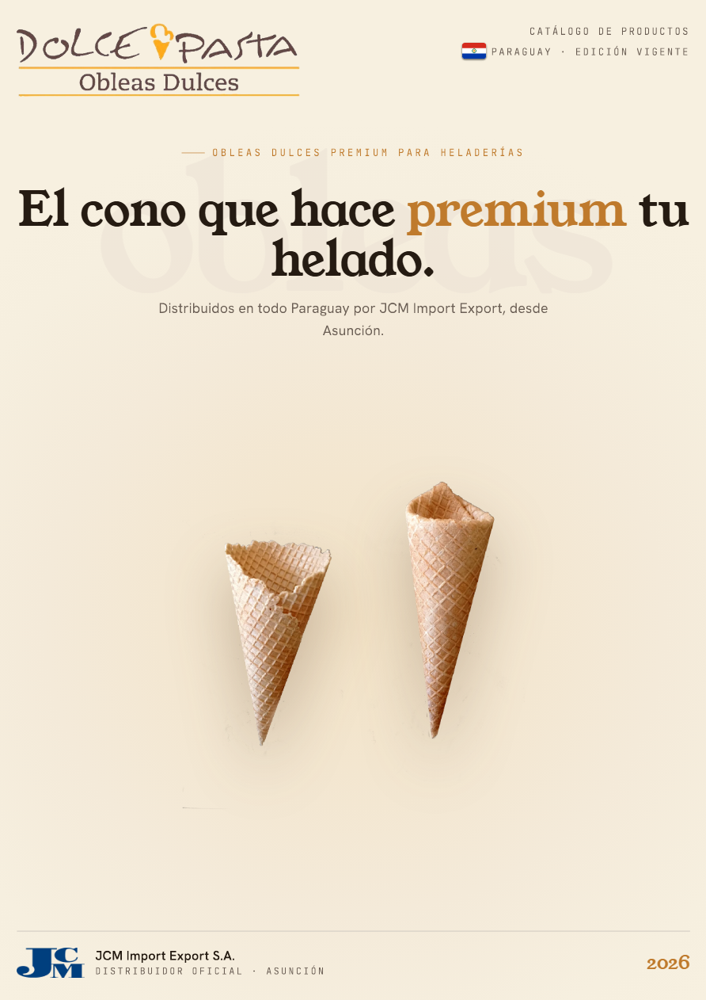
Anterior · página 2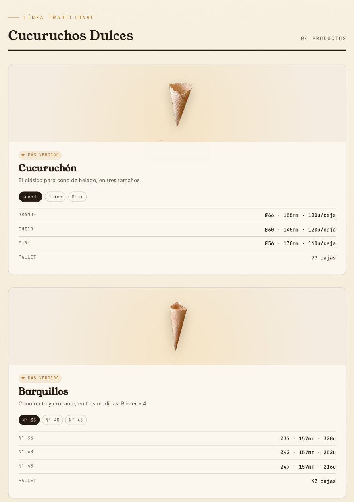
Nuevo · página 2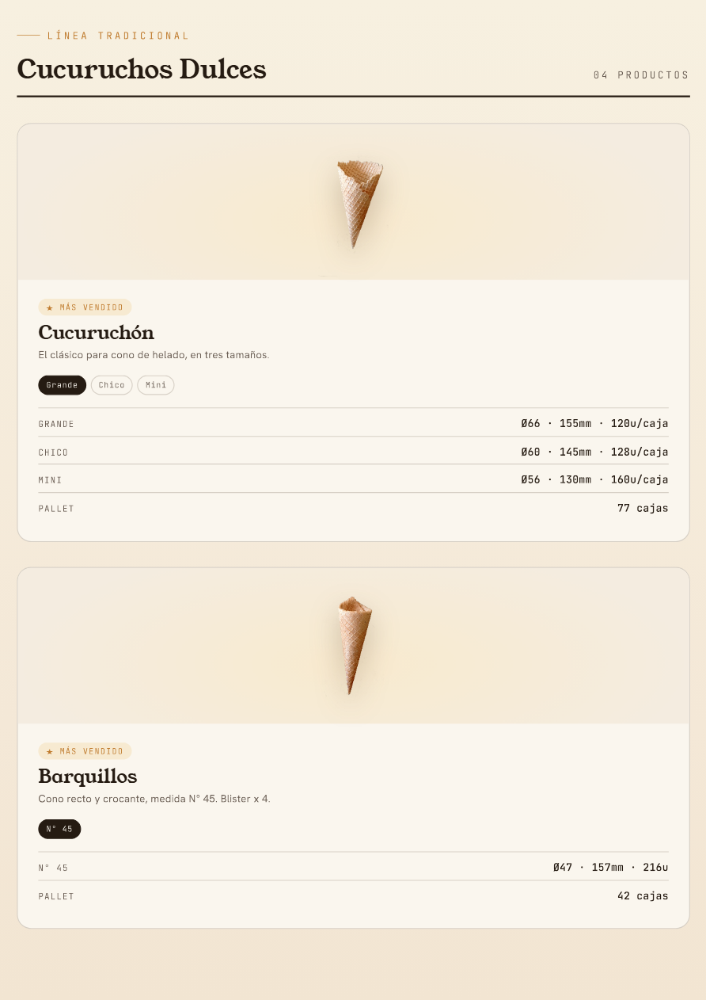
Anterior · página 3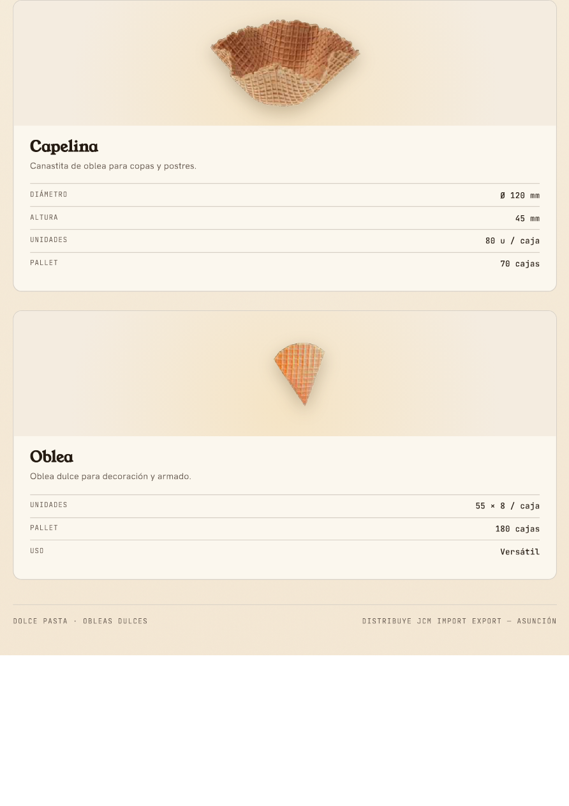
Nuevo · página 3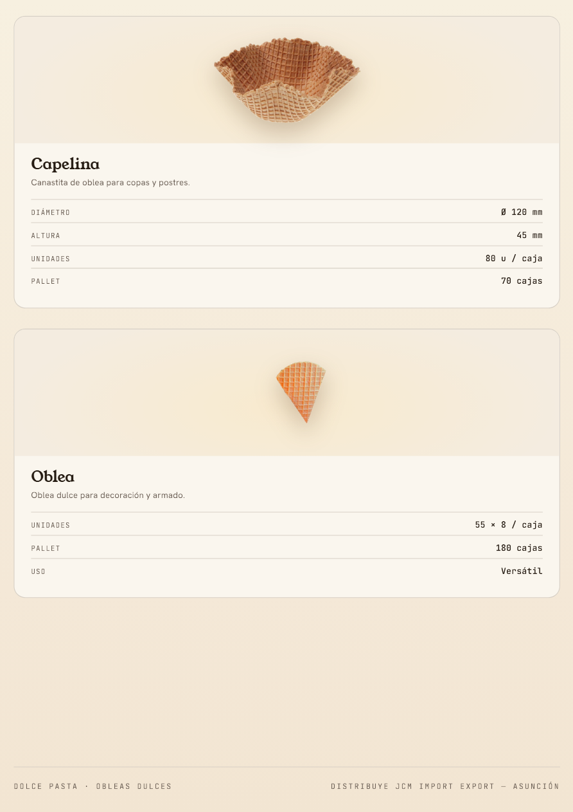
Anterior · página 4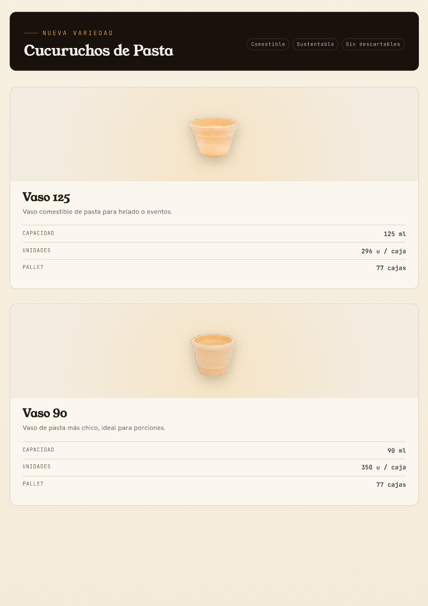
Nuevo · página 4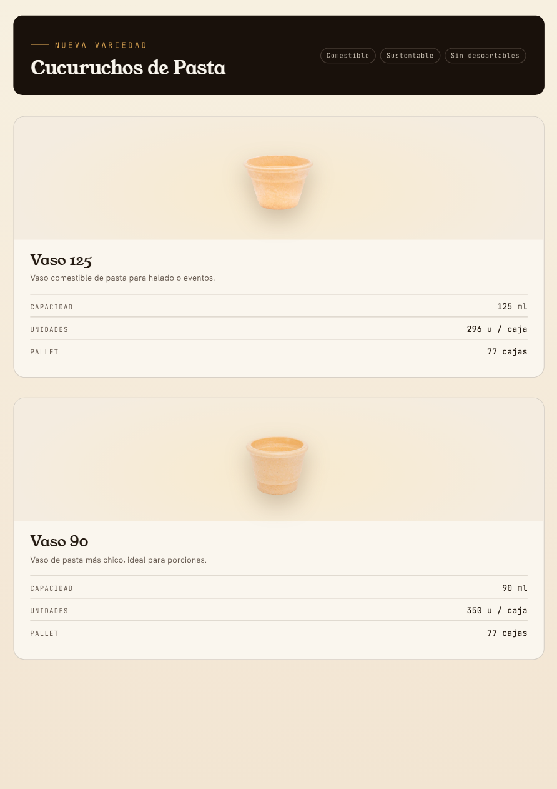
Anterior · página 5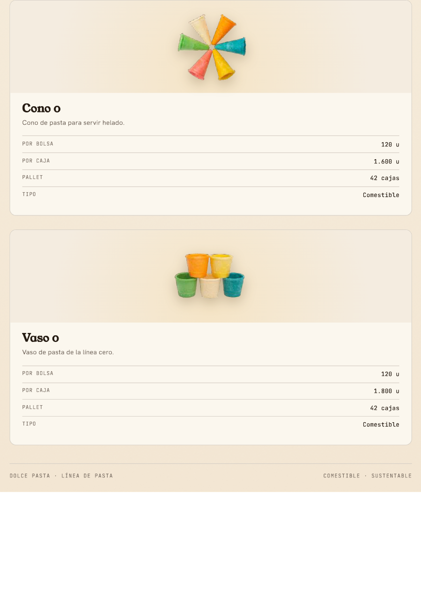
Nuevo · página 5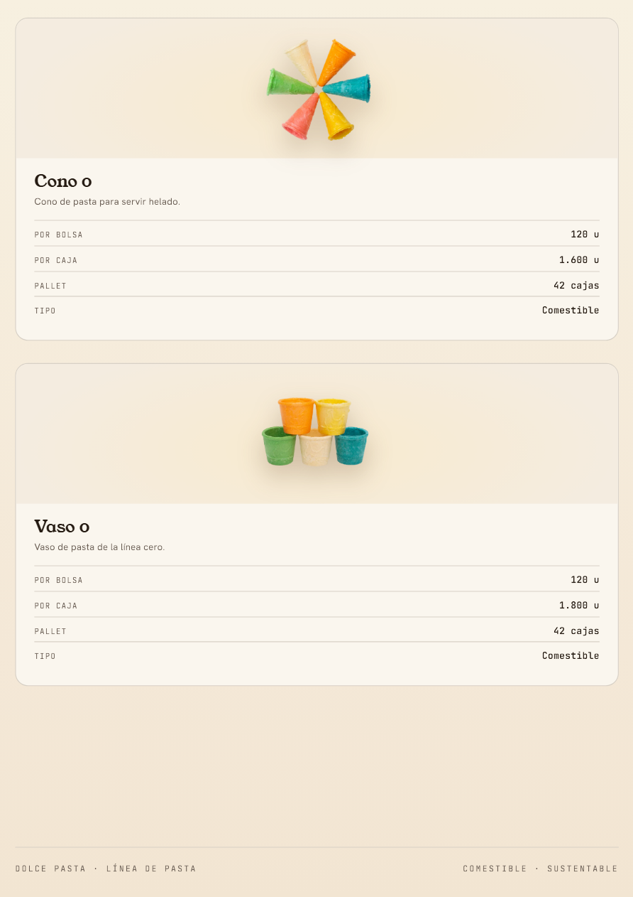
Anterior · página 6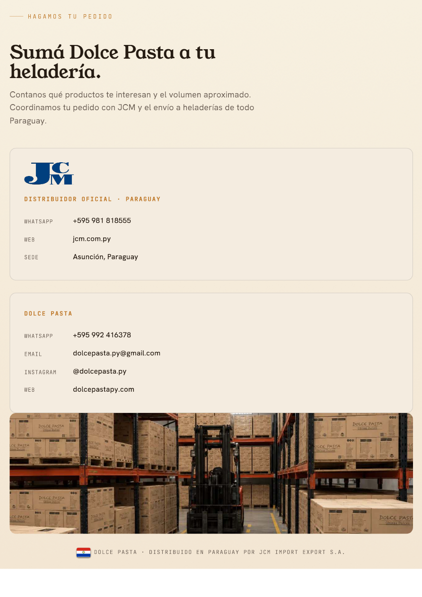
Nuevo · página 6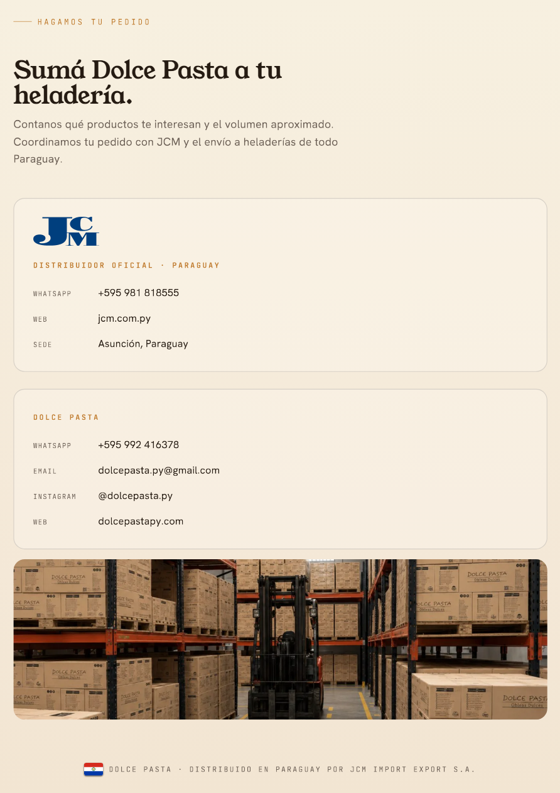